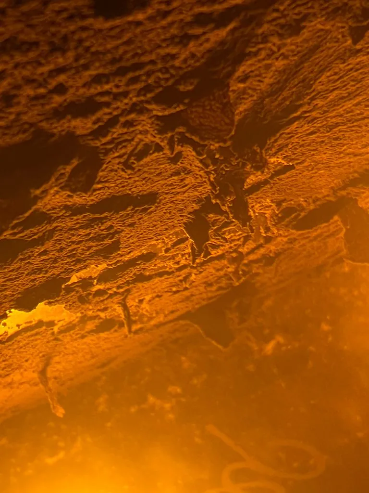

真菌 · 真菌界
鲁氏酵母 Zygosaccharomyces rouxii

鲁氏酵母是极耐盐、耐糖的酵母，在酱油和味噌的后熟发酵中产生独特香气，也会让蜂蜜、果酱等高糖食品腐败。
- 分类
- 门子囊菌门纲酵母纲目酵母目科酵母科属接合酵母属
- 栖息环境
- 高盐酱油醪、味噌与高糖的蜂蜜、果酱、糖浆中
- 地理分布
- 世界性分布，酱油、味噌酿造与含糖食品中常见
- 保护级别
- 暂无评估（IUCN 未评估，食品微生物）
物种志
鲁氏酵母是子囊菌门酵母科的单细胞真菌，细胞呈卵圆形至球形，以出芽方式繁殖，能形成子囊孢子。菌落乳白色至淡黄褐色，表面光滑。它最突出的能力是耐高渗透压：能在含盐 15%–18% 的酱油醪中生长发酵，也能在含糖 60% 以上的蜂蜜和果酱中存活，这种特性在微生物中并不多见。
鲁氏酵母是酱油、味噌等传统发酵食品后熟阶段的重要菌种。它在高盐环境中缓慢发酵，产生醇类、酯类和呋喃酮等风味物质，赋予酱油独特的酱香和甜香。但同样的耐性也让它成为食品工业的“麻烦制造者”：蜂蜜、糖浆、果酱和果汁若被它污染，会在高糖条件下发酵产气，导致包装膨胀、风味变坏。由于它耐盐耐糖，常规的糖渍和盐渍难以抑制，食品加工中需要严格控制卫生和水分活度。
形态与习性
- 细胞卵圆形至球形，出芽繁殖
- 耐盐性可在含盐 15%–18% 的酱油醪中生长
- 耐糖性可在含糖 60% 以上的食品中存活
- 用途酱油、味噌后熟发酵产香
- 危害引起蜂蜜、果酱发酵产气
- 风味产生醇、酯与呋喃酮类物质
- 防控控制水分活度与生产卫生
趣味知识
- 鲁氏酵母能在含盐 18% 的酱油里生长，耐盐能力惊人。
- 酱油的酱香和回甜，有它后熟发酵的一份功劳。
- 它也是蜂蜜和果酱的“天敌”，会让高糖食品发酵产气。
- 糖渍和盐渍都挡不住它，食品厂只能靠控制水分和卫生。